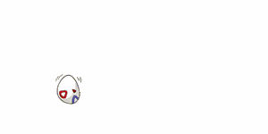
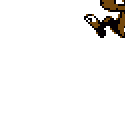
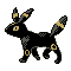
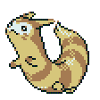
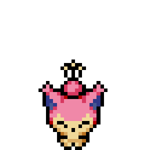

ik ben een hele grote fan van pokemon. Als meer dan 15 jaar. De favoriete van mij uit de serie zijn de generatie 4 daimond en de generatie 2 zilver.welke zijn jou favoriete?
pokemo mystery dungeon vindt ik nog leuker. Heel spaanend verhaal. Ik moest huilen op het einde. Kijk eens(ik zal wel zakdoeken advieseren.)
Mijn favorite pokemon zijn: de togepies (togepi, togetic, togekiss), jigglypuff en wigglytuff, sneasel Weavile en lucario Blubasur!
 ook schattige pokemon vind ik heel leuk als eevee en furret jirachi en umbreon
 